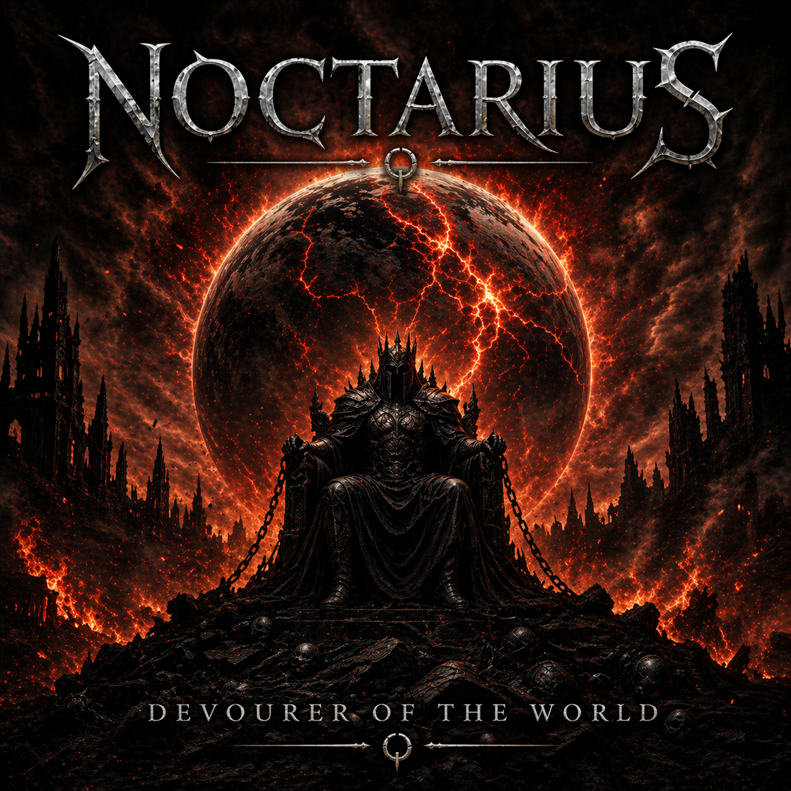

Devourer of the World

A Symphony of Ashes
Neon prophets on glowing thrones,
Preaching truths they’ve never known,
Silver tongues and hollow creeds,
Selling gods to feed their needs.
Marble pillars crack and bend,
When lies and virtue start to blend,
Crowds applaud the grand parade
Of empires rot in masquerade.
Voices crying in the night,
Drowned beneath the screens’ cold light,
Every warning cast aside—
Truth itself is crucified.
I am the Devourer of the World, arise!
Born from the ashes of your disguise.
When the last belief unfurls, it’s time—
I feast on the fall of your grand design.
You built your throne on shifting sand,
Now feel the judgment of your own hand.
When the final banners curl and burn,
I am the Devourer—now it’s my turn.
Golden statues made of air,
Crowns of virtue none can wear,
Words once forged to make men free
Twisted into heresy.
Mock the past, erase the flame,
Call all difference guilt and shame,
While the roots that held you strong
Wither quietly all along.
Every idol that you raise
Feeds the end of all your days,
Every truth you overwrite
Fans apocalypse to life.
I am the Devourer of the World, arise!
Born from the ashes of your disguise.
When the last belief unfurls, it’s time—
I feast on the fall of your grand design.
You built your throne on shifting sand,
Now feel the judgment of your own hand.
When the final banners curl and burn,
I am the Devourer—now it’s my turn.
No comet falls, no heavens roar,
The end begins at your own door.
Not by fire, nor by flood—
But by the poison in your blood.
A thousand laws, a million cries,
Yet none can hear the warning signs.
The beast you feared was never me—
It’s what you chose to be.
I am the Devourer of the World, revealed,
The fate your blinded faith has sealed.
When the last illusion twirls and dies,
I rise where all your future lies.
No savior comes, no angels stand,
Just ruins shaped by your command.
When the final truth is hurled—
I am the Devourer of the World.